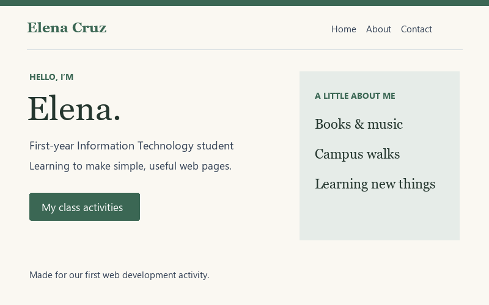
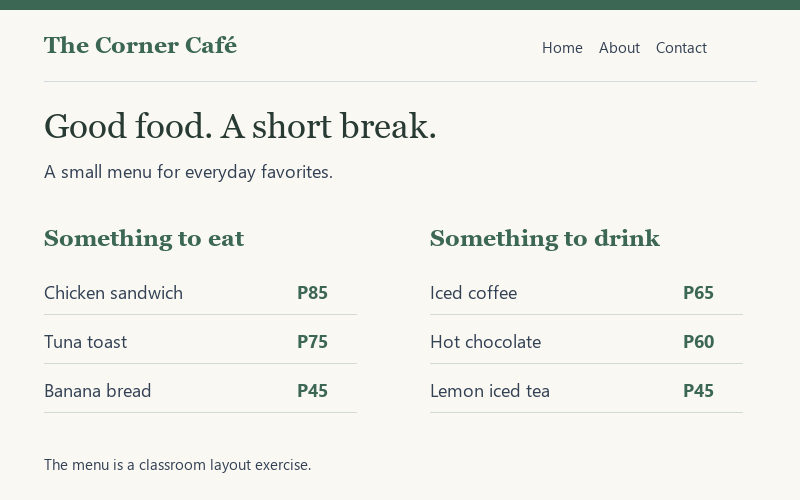

HTML5
I know how to use HTML to structure a webpage with headings, paragraphs, links, images, lists, and tables. I’m still practicing how to choose the right HTML elements to make my pages clear, organized, and easy to understand.
Student life & first websites
I’m a first-year Information Technology student who likes simple websites, good books, and a fresh page in my notebook.
This is where I keep my class projects and the things I’m learning along the way.
StudyingBS Information Technology
PracticingHTML, CSS & simple layouts
After classBooks, sketches & campus walks
01 / About me
Hi! I’m Jeramae, a first-year Bachelor of Science in Information Technology (BSIT) student at Cordova Public College. I chose IT because. I’m curious about how technology works, especially how websites are designed and developed. I want to learn new skills and gain the knowledge I need to create useful and engaging websites in the future.
I enjoy turning my ideas into something I can actually see and use on a webpage. Right now, I’m focusing on practicing HTML and CSS, learning new techniques, and reviewing my class notes to improve my skills and become more confident in web development.
In my free time, I enjoy reading short stories, drawing little sketches in my notebook, and taking pictures of plants during my walk home. These simple hobbies help me relax, express my creativity, and find inspiration in everyday things.
02 /My Skills
I know how to use HTML to structure a webpage with headings, paragraphs, links, images, lists, and tables. I’m still practicing how to choose the right HTML elements to make my pages clear, organized, and easy to understand.
I use colors, spacing, Flexbox, and simple grids to make my webpages look clean and organized. I’m also learning responsive design so my layouts can adjust properly and look good on both phones and computers.
I’m learning programming concepts such as variables, conditional statements, and loops in class. I practice by solving simple exercises and writing down each step to better understand how the code works.
I use Visual Studio Code to write and edit my code, organize my project files into folders, and preview my webpages in a browser. I also check my work regularly to find errors and fix layout issues as I improve my web development skills.
03 /My Projects

01 / HTML & CSS · Individual activity
My first personal webpage features a photo, a short introduction about myself, and a list of my hobbies and interests. Through this project, I practiced using HTML headings, adding links, and adjusting spacing with CSS.
View image preview
02 / HTML tables · Classroom activity
A weekly class schedule that organizes all my subjects in one place. Through this project, I practiced creating HTML tables using headings and rows to present information in a clear and organized way.
View image preview
03 / Page layout · Practice project
A simple one-page menu for an imaginary neighborhood café, featuring different food and drink options. I practiced creating a two-column layout with CSS and learned how to align prices and descriptions neatly for a clean, organized design.
View image preview04 / Get in Touch
Get in Touch
Feel free to connect with me to share ideas, discuss IT projects, exchange learning resources, or learn more about web development together.
I usually check my email after class, so feel free to send me a message. I’ll get back to you as soon as I can.
Cebu City Philippines
First year, BS Information Technology
Cordova Public College